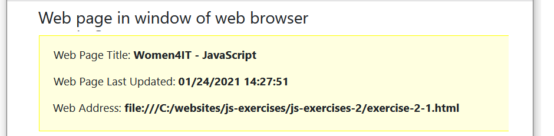

At the end of this Tutorial you will be able to:
In this Tutorial you will meet the following terms:
In this Tutorial you will work with the following web pages:
Downloading your JavaScript exercise files
Objects, properties and methods
The web browser navigator object
Exercise 2.1: Displaying navigator object properties
The window object of the web browser
Displaying object properties with document.write()
Follow these steps to download the exercise files for this JavaScript Tutorial:
The complete sub-folder and file structure for this Tutorial is as shown below.
Your exercise file is now ready for you to work with.
Objects, properties and methods are three important concepts in JavaScript. In simple terms:
This Tutorial will focus on three important objects in JavaScript:
Object
A container for a wide range of information (properties). Examples include the navigator (web browser), window and document (web page) objects. Objects can be accessed and acted on by methods in JavaScript code.
The window object represents the user's screen area in the web browser.
Two properties of the window object of particular interest to JavaScript programmers are shown in the table below.
Object |
Property Name |
Description |
window |
innerWidth |
The width of the current window in pixels. |
|
innerHeight |
The height of the current window in pixels. |
Let's use these two properties to display your web browser's screen width and height.
In VS Code, in your exercise-2-1.html file, you can see a second <h3> heading of "Window of web browser".
Under this heading is an empty pair of opening and closing <script> ... </script> tags.
Copy-and-paste the following two lines of JavaScript code inside these tags.
document.write("<p>Window width: <b>"+window.innerWidth+"px<\/b><br>");
document.write("Window height: <b>"+window.innerHeight+"px<\/b><\/p>");
Your VS Code should now look as follows.
Save your web page and reload your web browser. The result should look similar to that below.
Leave the exercise-2-1.html file open in VS Code and your web browser. You will make one more update to it.
JavaScript refers to the web page displayed in the current window of the web browser as the document object. The following table lists three of this object's properties.
Object |
Property Name |
Description |
document |
title |
The title of the web page. |
|
lastModified |
The date on which the web page was last amended. |
|
url |
The full web address of the page. |
Let's use these properties to display details of your exercise 2-1.html web page.
In VS Code, in your exercise-2-1.html file. You can see a third <h3> heading of "Web page in window of web browser".
Under this heading is an empty pair of opening and closing <script> ... </script> tags.
Copy-and-paste the following three lines of JavaScript code inside these tags.
document.write("<p>Web Page Title: <b>"+document.title+"<\/b><\/p>");
document.write("<p>Web Page Last Updated: <b>"+document.lastModified+"<\/b><\/p>");
document.write("<p>Web Page Address: <b>"+document.URL+"<\/b><\/p>");
Your VS Code should now look as follows.
Save your web page and reload your web browser. The result should look similar to that below.
You can close the exercise-2-1.html file when finished.
When typing document.write() statements, only enclose within quotes those items that you want interpreted literally.
For example, the following statement displays the window width of the browser window.
document.write("Screen Width: "+window.innerWidth);
It will produce an output such as the following.
You don't want the text ‘window.innerWidth’ displayed on the web page; what you do want is the value of the object property. That is why the object property is not surrounded by double or single quotes.
What would happen if you did enclose the document property within quotes as follows?
document.write("Screen Width: "+"window.innerWidth");
Your web browser would display the output shown below.
This is not an 'error'. The above JavaScript code will run perfectly. But the result is probably not what you want!
All JavaScript object properties fall into one of two categories:
In JavaScript and other programming languages, accessing an object's property (without changing it) is known as getting. Changing a property of an object is called setting.
In these first two Tutorials you have been using the document.write() statements to display output on screen.
More exactly, you have been using the write() method of the document object to input content to an HTML file.
In Javascript, the name of a method ends in a pair of brackets, called a parenthesis. In some methods, the parenthesis contains some content. For example:
document.write("This is a sample string.");
window.confirm("Did you enjoy this web page?");
In other methods the parenthesis can be empty. The following code closes the currently open window. Or, to use JavaScript terminology, it applies the close() method to the window object.
window.close();
Method
An action performed on an object. Method names end with a parenthesis. For example, the document object has a write() method, and the window object has alert(), confirm() and close() methods.
Follow these steps below to upload your entire js-exercises folder to your website on GitHub.
Your uploaded files are published on GitHub at a web address similar to the following, where username is the username you have chosen for your GitHub account:
https://username.github.io/js-exercises/js-exercises-2/objects-properties-methods/exercise-2-1.html
It may take a few minutes for your uploaded files to appear on GitHub.
in JavaScript, an object is a container for a wide range of information. Examples of objects include the navigator (web browser), window and document (web page) objects. Objects can be accessed and acted on by methods in JavaScript code.
The two following statements use the write() method of the document object and the alert() method of the window object.
document.write("Every day I\'m getting better at <b>JavaScript<\/b>");
window.alert("Thank you for visiting my web page");
Objects in JavaScript have properties. For example, the document.title property is the title of the web page, and window.innerHeight is the height of the screen area in pixels. Some objects properties are scriptable. That is, they can be updated by JavaScript code. Other properties can only be read by JavaScript and not changed. The standard JavaScript format an object and one of its properties is as follows.
objectname.propertyname
When typing document.write() statements only enclose within quotes those items that you want interpreted literally. The following statement displays the width of the screen area.
document.write("Screen Width: "+"window.innerWidth");
You don't want the text ‘window.innerWidth’ displayed. What you do want is the value of that object property. That is why the object property is not surrounded by double or single quotes.
Return to Contents.